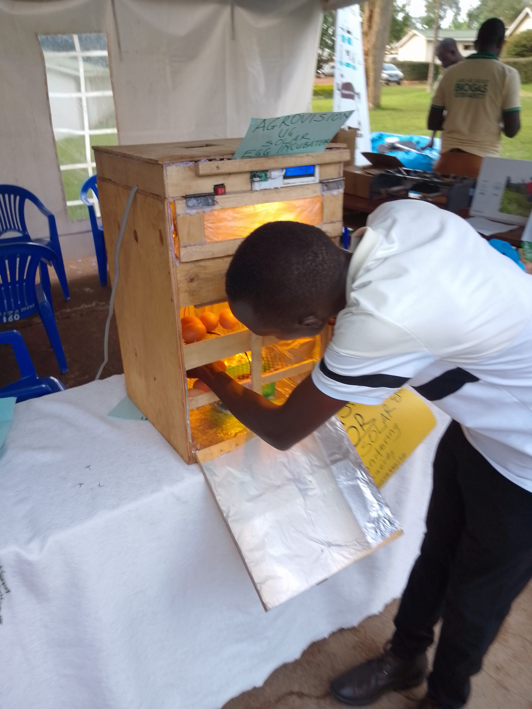
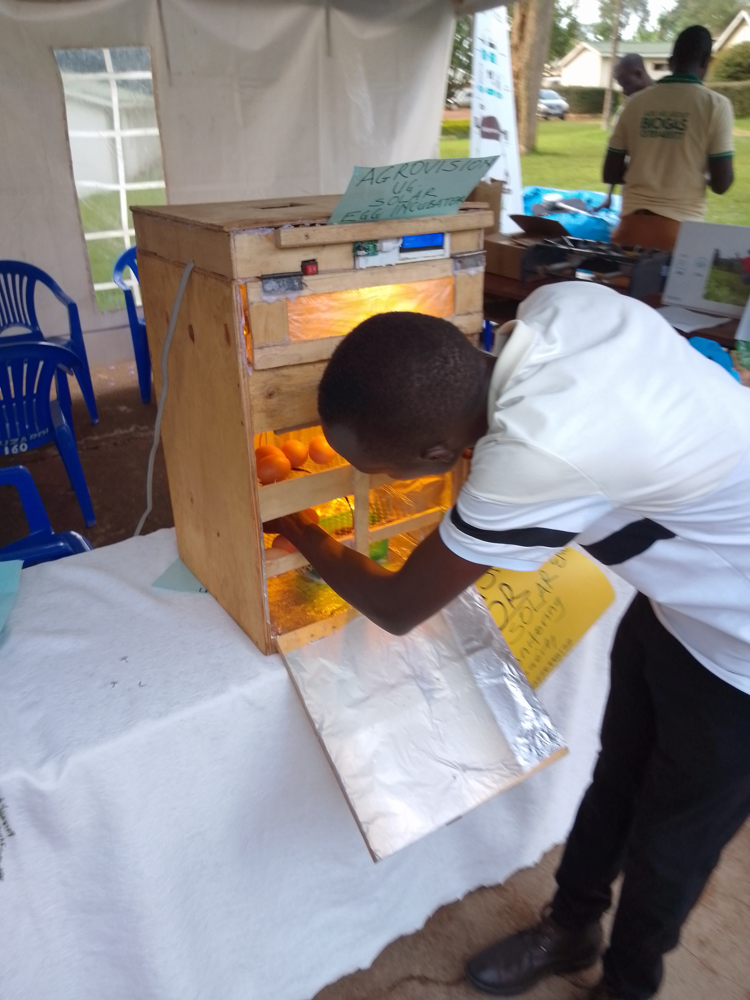

Biomedical Engineering AI Projects
-
PneumoAI Diagnostics System: AI-assisted pneumonia diagnosis using X-ray images.
[GitHub]


Biomedical Engineer | Data Scientist | Embedded Systems Developer | Researcher
I am a Biomedical Engineer and self-taught Data Scientist passionate about AI-driven solutions in business, healthcare, and agriculture. I work on predictive modeling, embedded AI systems, software development, device innovations, and cross-sectoral engineering research.
 



This demonstrates my ability to build and deploy web platforms.
Explore some images from my work in Biomedical Engineering, Embedded Systems, and AI Projects.


Email: olalamos001@gmail.com
LinkedIn: Profile
GitHub: Profile